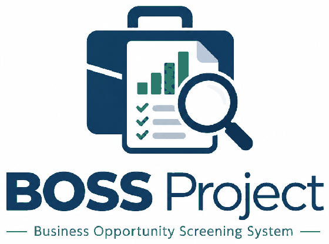

Screen a business opportunity
A rule-based expert system
Nine questions about a proposed small business. You get a recommendation, and — more usefully — the list of things you have assumed but not checked.
Nine questions, about three minutes. Nothing leaves this device.